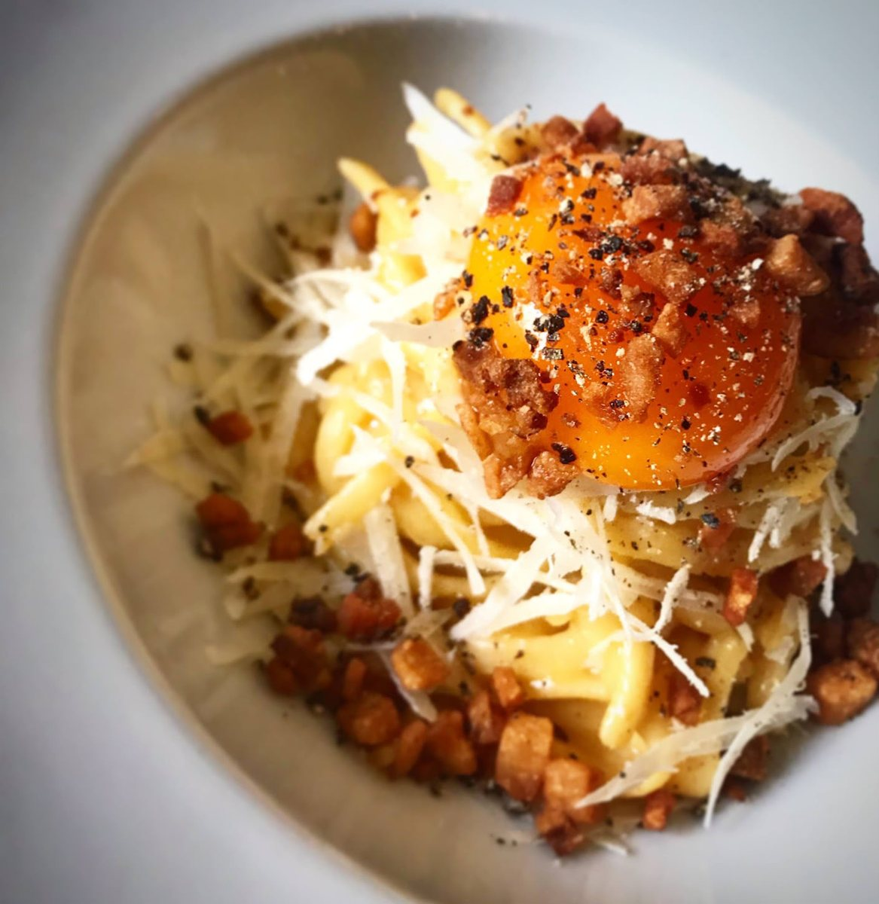
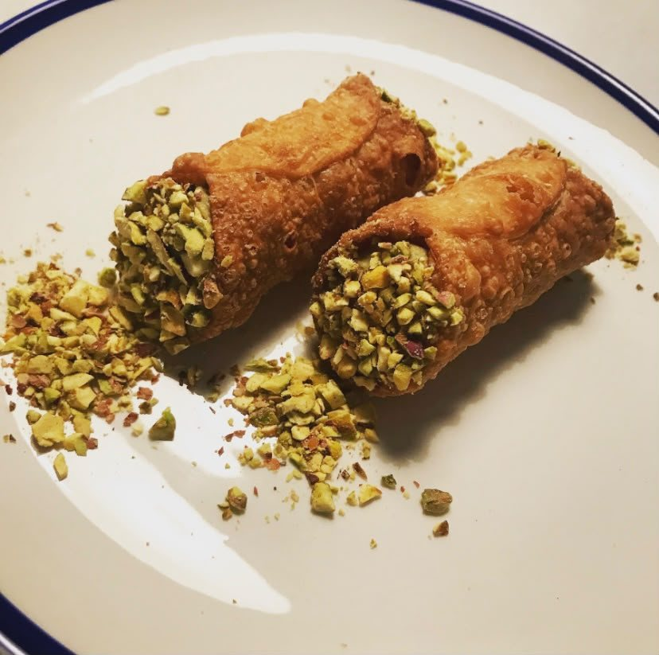
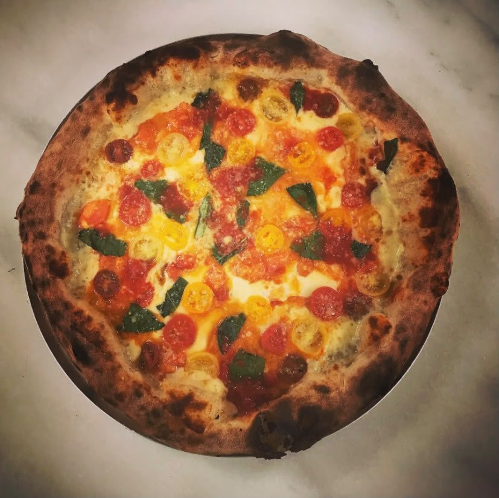
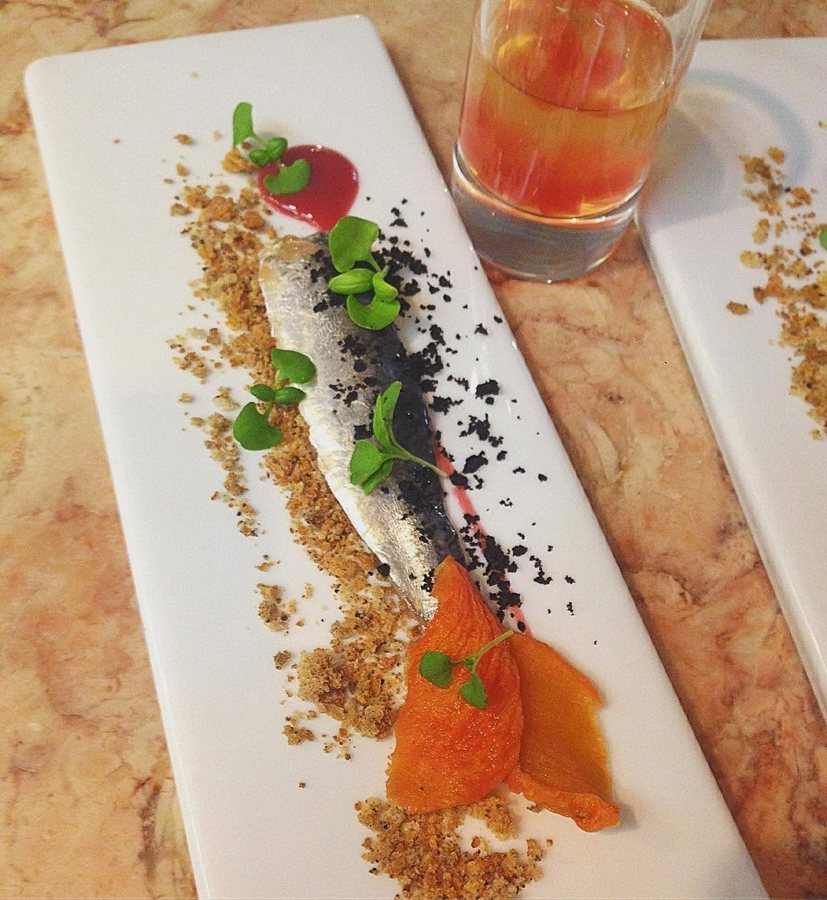

I+D industrial · Restauración
Restalia: I+D para 100 Montaditos y TGB
Desarrollo de nuevos productos y conceptos, de la investigación de tendencias a lanzamientos a gran escala, junto a marketing, operaciones y proveedores.
Platos
Italia, dulce, pizza y mar.




Cómo trabajo
01
Observación del consumidor y análisis de tendencias para detectar necesidades y oportunidades.
02
Definición del reto y de una propuesta de valor que conecte los resultados de la investigación con los objetivos del negocio.
03
Creación de recetas y prototipos para explorar alternativas y comprobar la viabilidad técnica.
04
Catas con consumidores y equipos para ajustar la propuesta y decidir cómo avanzar.
05
Pruebas de producción y planificación del lanzamiento con marketing, operaciones y proveedores.
Casos
I+D industrial · Restauración
Desarrollo de nuevos productos y conceptos, de la investigación de tendencias a lanzamientos a gran escala, junto a marketing, operaciones y proveedores.
Restauración
Restaurante propio en Lisboa con influencias portuguesas y brasileñas: concepto, menú, experiencia del cliente y gestión.
Restauración
Chef en la Padaria da Esquina, Di Amici y San Paolo Pizza Bar, en Portugal y España.
Proyectos creativos
Proyecto creativo itinerante, cultural y artístico de cocina sostenible.
Trayectoria
Desarrollo de producto para:100 MontaditosTGB
Cocina en:San Paolo Pizza BarDi AmiciTasca da EsquinaPadaria da Esquina
Contacto
Abierto a posiciones de I+D culinario, desarrollo de producto y consultoría en Madrid y Barcelona.
© 2026 Leandro Mesquita